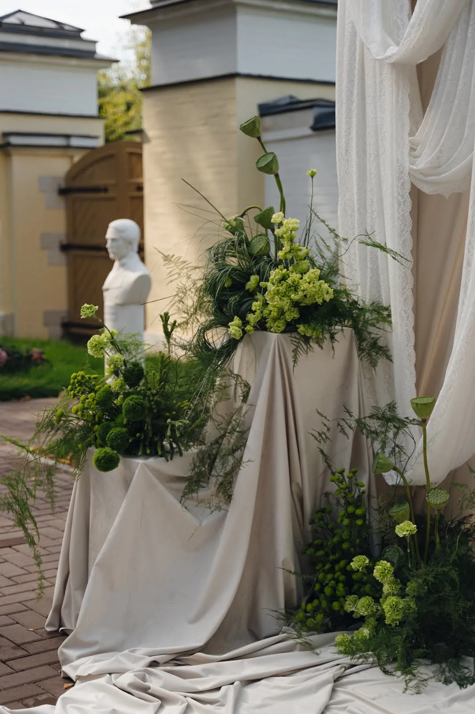
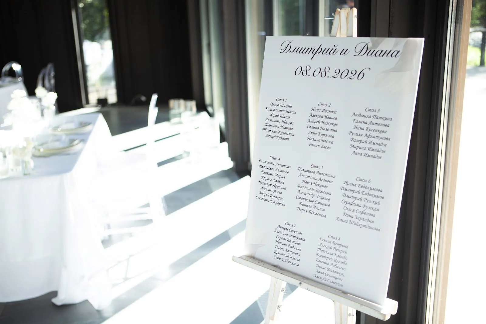

Входная группа — первое, что видит гость, ещё до вывески и меню. Хорошо оформленный вход за секунды объясняет, что внутри: праздник, уют или премиальный сервис. Разбираем, из чего складывается декор входа, какие решения работают в каждый сезон и что важно согласовать заранее.
Что такое входная группа и что в неё входит
В декоре входной группой называют всё пространство на подходе к двери: крыльцо или ступени, сам дверной проём, козырёк, фасад вокруг двери и зону у входа внутри. Оформление работает как единая композиция — не отдельный венок на двери, а рамка, которая собирает взгляд.
- Обрамление двери — гирлянда или арка из зелени, цветов, веток, лент.
- Акценты по сторонам — вазоны, кашпо, напольные композиции, деревья в кадках.
- Козырёк и верх фасада — подвесные элементы, световые гирлянды.
- Свет — тёплая подсветка, свечи в фонарях, интегрированная LED-гирлянда.
- Ступени и пол — дорожка, лепестки, сезонные элементы.

Идеи по сезонам
Осеннее оформление входной группы
Осенью работает тёплая палитра и фактура: сухоцветы, тыквы и декоративные кабачки, ветки с ягодами, злаки, клён, вереск в кашпо. Хорошо смотрятся корзины и деревянные ящики, плед или мешковина как подложка. Главное — не перегружать: два-три крупных акцента у двери читаются лучше, чем десятки мелочей.
Новогоднее оформление входа
Самый востребованный сезон. Классика — гирлянда из хвои вокруг двери, ели в кадках по сторонам, шары крупного диаметра, световые нити. Чтобы вход не выглядел «как у всех», выбирают одну идею: монохром (только белое и серебро), природный стиль (живая хвоя, шишки, сухие апельсины) или фирменные цвета заведения. Монтаж обычно планируют на конец ноября — начало декабря.
Весна и лето
Весной — цветущие ветки, тюльпаны и гиацинты в кашпо, лёгкие пастельные акценты. Летом — пышные цветочные арки и гирлянды у двери, вазоны с гортензией и зеленью. Живые цветы на улице требуют ухода: замены, полива и защиты от солнца.
Для ресторана, магазина, салона и дома
Ресторан и кафе. Вход должен считываться издалека и работать на фото: гости фотографируются у двери и отмечают место. Хорошо работает арка или гирлянда, которая подхватывает интерьер внутри.
Магазин и бутик. Входная группа продолжает витрину. Декор не должен перекрывать вывеску и товар — лучше обрамление по периметру, чем композиция в центре.
Салон красоты, клиника, офис. Здесь ценятся аккуратность и сдержанность: зелень, белые цветы, мягкий свет. Сезонные элементы — точечно.
Частный дом. Вход оформляют вместе с крыльцом и дорожкой; часто добавляют декор на ворота и в сад, чтобы композиция была цельной.

Живые цветы, искусственные или шары
Живые цветы и зелень дают объём и запах, отлично выглядят на фото, но живут ограниченное время и зависят от погоды. Подходят для событий: открытие, свадьба, вечеринка.
Искусственные и стабилизированные материалы выбирают для сезонного оформления на недели и месяцы: композиция сохраняет вид при морозе и дожде. Качественные искусственные цветы и хвоя на расстоянии вытянутой руки почти не отличаются от живых.
Шары — быстрый и бюджетный вариант для одного дня: дни рождения, открытия, акции. На улице они чувствительны к ветру, солнцу и холоду.
Совет: для долгого сезонного оформления выгоднее сочетание — каркас и основа из долговечных материалов, а живые акценты добавляют к праздникам.
Как заказать оформление входной группы
- Пришлите фото входа днём, с расстояния 5–10 метров, и размеры проёма.
- Определите срок — на один день, сезон или постоянно.
- Уточните ограничения: можно ли крепить к фасаду, есть ли розетка для подсветки, требования арендодателя или управляющей компании.
- Получите эскиз и смету — с вариантами по материалам.
- Согласуйте монтаж и демонтаж — время, когда вход можно перекрыть.
Мы делаем входные группы для ресторанов, магазинов, офисов и частных домов в Москве и Подмосковье: от одной арки на открытие до сезонного оформления. Расскажите о вашем входе — предложим идею и посчитаем смету.
Частые вопросы
Когда заказывать новогоднее оформление входа?
Лучше в октябре — начале ноября: в декабре загрузка у декораторов максимальная, а монтаж обычно проводят с конца ноября.
Можно ли крепить декор к фасаду?
Зависит от здания: часто нужно согласие арендодателя или управляющей компании. Если крепить нельзя, используют напольные конструкции, кадки и стойки.
Сколько живут живые цветы на входе?
На улице — обычно от одного до нескольких дней, в зависимости от погоды и сорта. Для долгого оформления используют искусственные или стабилизированные материалы.
Что нужно для расчёта стоимости?
Фото входа, примерные размеры, срок оформления и пожелания по стилю. По ним делаем эскиз и смету.